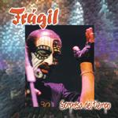

Home Artist links Label link

Fragil - Sorpresa Del Tiempo
| Artist: | Fragil |
| Title: | Sorpresa Del Tiempo |
| Label: | Musea FGBG 4423 |
| Length(s): | 60 minutes |
| Year(s) of release: | 2002 |
| Month of review: | [10/2002] |
Line up
Andres Dulude - voice, acoustic guitar
Cesar Bustamante - bass
Luis Valderrama - guitar
Octavio Castillo - keys, flute
Jorge Durand - drums, percussion
Tracks
| 1) | Obertura | 6.19
|
| 2) | Av. Larco | 4.09
|
| 3) | Mundo Raro | 5.18
|
| 4) | Pastas Pepasy Otros Postres | 3.38
|
| 5) | Lizy | 3.27
|
| 6) | Esto Es Iluminacion | 3.14
|
| 7) | Oda Al Tulipan | 5.15
|
| 8) | El Caiman | 7.03
|
| 9) | Le Dicen Rock | 3.40
|
| 10) | El Abuelo | 1.48
|
| 11) | Animales | 4.20
|
| 12) | Caras | 3.54
|
| 13) | Fotograma | 4.03
|
| 14) | Sorpresa Del Tiempo | 3.52
|
Summary
Peruvians Fragil have been together since 1975, releasing five albums, and becoming quite something in their home land. This album presents live renditions with a 26 piece orchestra of their material.
The music
Undoubtedly Obertura means overture, since that's what this track, or at least its first half, clearly is. Nicely flowing stuff, with definite strength.
The first vocal track Av. Larco shows what this band is about, with material that's pretty accessible, leaning towards pop. The presence of the orchestra doesn't quite manage to keep things symphonic. It also becomes quite apparent that this is a popular band, since the audience is audibly active during this set of mostly symphonic poprock.
Conclusion
Frankly, I can't quite see this album as a progressive release. This is nice-ish pop stuff, with a hint of symphony, at times reminding of the German band Freiheit, but uninteresting for most into progressive.
© Roberto Lambooy